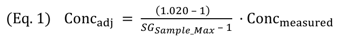
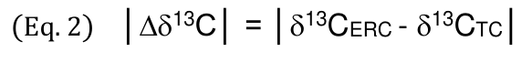
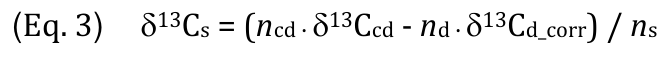
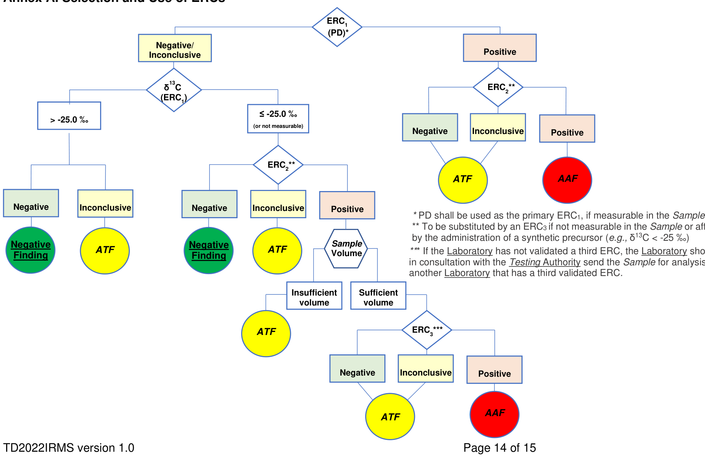

Technical Documents · TD2022IRMS
Edition v1.0, 2022 (version 1.0) · effective 1 January 2022 · superseded
Retrieved on 25 November 2026 from https://www.wada-ama.org/sites/default/files/2022-01/td2022irms_v1.0_final_eng_0_0.pdf
Editions: v1.0, 2027 (current) · v1.0, 2022 · v2.0, 2021 · v1.0, 2021 · v1.0, 2019 · v1.0, 2016 · v1.0, 2014
p. 1
Detection of Synthetic Forms of Prohibited Substances by GC/C/IRMS
1.0 Introduction
This Technical Document (TD) describes the Analytical Method to detect the presence of synthetic forms of Prohibited Substances by Gas Chromatography / Combustion / Isotope Ratio Mass Spectrometry (GC/C/IRMS) in urine Samples.
19-Norandrosterone (19-NA) and 19-noretiocholanolone (19-NE) are considered in a separate TD (TD 19NA[1]), but the general technical recommendations and method validation requirements described herein shall be applied to their analysis.
1.1 Application of GC/C/IRMS
1.1.1 GC/C/IRMS Analysis as a Confirmation Procedure (CP) for the Administration of Synthetic Forms of Endogenous Anabolic Androgenic Steroids (EAAS)
GC/C/IRMS analysis shall be conducted as a CP for atypical steroid profiles, as described in the TD EAAS[2]. In addition, even if the Markers of the steroid profile are within the normal ranges, the Testing Authority, the Results Management Authority, or WADA may request GC/C/IRMS analysis to be performed on any urine Sample.
Furthermore, the Laboratory or the Athlete Passport Management Unit (APMU) may at any time advise the Testing Authority to perform (or not) the GC/C/IRMS analysis based upon its expertise, for example in the presence of any other Marker(s) of administration of EAAS.
1.1.2 GC/C/IRMS Analysis as a CP for the administration of Synthetic Forms of Other Prohibited Substances
GC/C/IRMS analysis shall be conducted before reporting an Adverse Analytical Finding (AAF) for the following compounds when their estimated concentrations (SG-adjusted, if needed) are determined as follows:
[Comment: When the measured SG of the urine Sample (SGSample) is greater than (>) 1.018, the concentrations (free and hydrolyzed glucuroconjugated steroids) shall be adjusted according to the Eq. 1:
\[\text {Conc} _ { \text {adj} } \, = \, \frac { ( 1 . 0 2 0 - 1 ) } { S G _ { S a m p l e _ { \ } M a x ^ { - 1 } } } \, \cdot \, \text {Conc} _ { \text {measured} }\]

Refer to effective TD DL[3] for instructions on calculating SGSample_Max]
p. 2
- Samples containing Boldenone (B) or the main Boldenone Metabolite (BM1; 5β-androst-1-en-17βol-3-one) at a concentration estimated between (≥) 2.5 ng/mL and (≤) 30 ng/mL:
- Confirmed findings (following the application of a CP confirming the identity of the Analyte in accordance with the TD IDCR[4]) for B and/or BM1 at concentrations estimated below (<) 2.5 ng/mL should be reported as Atypical Findings (ATF), unless the results of the GC/C/IRMS analysis, if performed (depending on Laboratory's analytical capacity and following consultation with the Testing Authority), conclusively establish the exogenous (AAF) or endogenous (Negative Finding) origin of the substance;
- Confirmed findings for B and/or BM1 at a concentration estimated above (>) 30 ng/mL should be reported as AAF without the need for GC/C/IRMS analysis, unless the Sample shows signs of extensive degradation[2], in which case the result shall be reported as an ATF.
[Comment: the GC-MS identification of the Analytes (target compounds and endogenous reference compounds) is also required for reporting an AAF or ATF based on the GC/C/IRMS analysis. See Article 2.2.]
- Samples containing 6α-hydroxy-androstenedione (6α-OH-AD) at a concentration estimated above (>) 10 ng/mL with no signs of extensive Sample degradation (see TL21[5] and TD EAAS[2]):
- Findings for 6α-OH-AD at a concentration estimated below or at (≤) 10 ng/mL or above (>) 10 ng/mL and in the presence of signs of extensive Sample degradation [2] should be reported as a Negative Finding unless the Laboratory, at its discretion, decides to proceed with the GC/C/IRMS analysis (in which case the results of the analysis shall be reported in accordance with this TD).
[Comment: 6α-OH-AD is also a Marker of the administration of EAAS (e.g., testosterone, DHEA, androstenedione). Therefore, it is recommended that for Samples with a 6α-OH-AD concentration > 10 ng/mL and no signs of extensive Sample degradation, the Laboratory, in consultation with the Testing Authority, performs GC/C/IRMS analysis targeting the Markers of the steroid profile before determining the need to subject the Sample to GC/C/IRMS analysis for 6α-OH-AD (e.g. if the GC/C/IRMS results for the Markers of the steroid profile are negative). This is particularly important for those Laboratories that do not have the analytical capacity to do the test for 6α-OH-AD and would have to subcontract the analysis to another Laboratory.
Nevertheless, the Laboratory may also proceed directly to the GC/C/IRMS analysis for 6α-OH-AD if there is in-house analytical capacity to perform the analysis and/or if the Laboratory has an agreement with the Testing Authority to subcontract the GC/C/IRMS analysis at the Laboratory's discretion.]
- Samples containing Formestane (F) at a concentration estimated between (≥) 50 ng/mL and (≤) 150 ng/mL:
- Findings for F at a concentration estimated below (<) 50 ng/mL should be reported as a Negative Finding, unless the result of the GC/C/IRMS analysis, if performed (depending on Laboratory's analytical capacity and following consultation with the Testing Authority), conclusively establishes the exogenous origin of the substance (AAF);
- Confirmed findings for F at a concentration estimated above (>) 150 ng/mL shall be reported as AAF without the need to conduct a GC/C/IRMS analysis.
[Comment: Laboratories that do not have in-house analytical capacity to test for B, BM1, 6α-OH-AD, or F shall, in consultation with the Testing Authority (or as previously agreed), subcontract the analysis to another
Laboratory that has such analytical capability. In such cases, the Laboratory shall confirm the finding (in accordance with the TD IDCR[4]) before sending the Sample for GC/C/IRMS analysis to the other Laboratory.]
p. 3
1.1.3 "B" Sample CP
When an AAF is reported based on the results of a GC/C/IRMS analysis performed on the "A" Sample, only the GC/C/IRMS analysis and GC-MS identification of the Analytes shall be repeated during the "B" Sample CP, if applicable. The same ERCs and TCs that led to the "A" Sample AAF shall be measured in the "B" Sample (see Article 2.4.2).
2.0 GC/C/IRMS Analysis
The application of GC/C/IRMS is based on the following:
- The determination of the δ¹³C value of the Target Compound(s) (TCs), i.e., the Marker(s) of the urinary "steroid profile" [e.g., androsterone (A), etiocholanolone (Etio), 5α-androstane-3α,17β-diol (5αAdiol), 5β-androstane-3α,17β-diol (5βAdiol), testosterone (T), epitestosterone (E)], as well as other target Analytes [e.g., B, BM1, 6α-OH-AD, F, or epiandrosterone (EpiA)];
[Comment: EpiA, which is detected in the steroid sulfoconjugated fraction, is recommended as an additional TC for GC/C/IRMS analysis to determine the administration of testosterone or its precursors. The Laboratory should consider performing GC/C/IRMS analysis for EpiA when the results obtained for the Markers of the steroid profile in the glucuroconjugated fraction are suspicious but inconclusive.]
- The determination of the δ¹³C value of the Endogenous Reference Compound(s) (ERC), i.e., pregnanediol (PD), pregnanetriol (PT), 5α-androst-16-en-3α-ol (16-en), 11β-hydroxy-androsterone (11-OH-A), and 11-oxo-etiocholanolone (11-oxo-Etio); and
[Comment: The Laboratory shall validate the use of, at least, PD as the principal ERC and one additional ERC from this list. See Articles 2.1.1 and 2.4.]
- The calculation of the absolute difference in δ¹³C values, i.e., the │∆δ¹³C│ value, between the ERC(s) and the TC(s):

p. 4
2.1 GC/C/IRMS Test Method Characteristics
2.1.1 GC/C/IRMS Test Method Validation Requirements
As part of the Analytical Method validation, the Laboratory shall determine:
· Linearity of the Ion Source
The range of intensities of CO₂ pulses (in mV or nA, as applicable) that produce consistent results within the specifications of the instrument manufacturer, as determined from 6 to 10 pulses of different peak heights/intensities. The linearity of the ion source shall be checked regularly, e.g. monthly.
· Linearity of the Instrument
The range of intensities [expressed in response units (mV or nA) and/or as amounts (ng)] of injected Analytes that give a consistent and repeatable δ¹³C value for standards of TC(s) and ERC(s), as determined after the replicate injection and analysis (n ≥ 3) of 6 to 10 different dilutions of underivatized or acetylated RM(s).
The linear range of the instrument shall comply with the following criteria:
- The means of the replicate (n ≥ 3) δ¹³C determinations at each dilution level shall not differ by more than 0.5 ‰ from the mean δ¹³C value of all δ¹³C determinations within the linear range; and
- The standard deviation (SD) of the replicate (n ≥ 3) δ¹³C determinations at each dilution level shall not be higher than (<) 0.5 ‰.
· Limit of Quantification (LOQ) in Urine
The lowest concentration (ng/mL) of each TC and ERC in urine, when using not more than (≤) 25 mL of Sample, that produces a measurable signal in the linear range of the instrument with a SD (n ≥ 3), which is not higher than the corresponding uc (i.e., SD ≤ uc), as determined by the Laboratory during method validation.
[Comment: In routine analysis, more than (>) 25 mL of urine could be used at the Laboratory's discretion if the Sample volume is sufficient. This volume adjustment may allow the analysis of TCs and ERCs present in the Sample at a concentration lower than (<) the respective LOQ (which is determined in a maximum of 25 mL urine) as long as the signal is within the validated linearity range of the IRMS instrument for that particular Analyte.]
· Measurement Uncertainty (MU)
The LOQ in urine and the maximum acceptable combined standard uncertainty (uc_Max) for the determination of the δ¹³C values of TCs and ERCs shall be not higher than (≤) the values specified in Table 1 below.
p. 5
Table 1 LOQ and uc_Max Requirements for TCs and ERCs
| Analyte | LOQ (ng/mL) | uc_Max (δ) (‰) |
|---|---|---|
| 50 | 0.7 | ERCs |
| 10 | 0.7 | T, 5αAdiol |
| 20 | 0.7 | 5βAdiol |
| 20 | 1.0 | EpiA |
| 50 | 1.0 | E, F |
| 100 | 0.7 | A, Etio |
| 2.5 | 1.0 | B / BM1 |
| 6α-OH-AD 10 | 1.0 |
· Reference Population Data
The ∆δ¹³C values for each ERC-TC pair [including as TCs, at least, A, Etio, 5αAdiol, 5βAdiol and T, and using at least two (2) ERCs, one of which shall be PD] analyzed in volunteer urine samples and/or Athlete negative Samples (a minimum of 20 male and 20 female urine samples), covering the range of steroid concentrations usually found in Samples.
[Comment: The requirement to have measurements from a minimum of 20 urine reference samples from females does not apply to T and E determinations. However, a minimum total number of 40 reference determinations is required.]
The analysis of these negative urine samples shall serve to evaluate the Fitness-for-Purpose of the GC/C/IRMS Analytical Method and shall meet the following criteria:
- The Mean│∆δ¹³C│+ 2SD│∆δ¹³C│value for ERC-TC combinations containing A shall be ≤ 2 ‰;
- The Mean│∆δ¹³C│ + 2SD│∆δ¹³C│ value for ERC-TC combinations containing Etio, T or the Adiols as TCs shall be ≤ 3 ‰;
- The Mean│∆δ¹³C│+ 2SD│∆δ¹³C│value for ERC-TC combinations containing E or EpiA as TCs shall be ≤ 4.5 ‰ or ≤ 4 ‰, respectively;
- For ERC-TC combinations including A, Etio, 5αAdiol, 5βAdiol or T, the SD of all │∆δ¹³C│values shall be ≤ 1.0 ‰; and
- For ERC-TC combinations including E and EpiA the SD of all │∆δ¹³C│values shall be ≤ 1.2 ‰.
- Endogenous Reference Compounds (ERCs)
The Laboratory shall validate the use of at least two (2) ERCs, including PD as the primary ERC (ERC₁), and at least one (1) additional ERC selected from 16-en, 11-OH-A, 11-oxo-Etio and PT.
p. 6
· Target Compounds (TCs)
The Laboratory shall validate the analysis of, at least, the Markers of the urinary steroid profile (A, Etio, T, 5αAdiol and 5βAdiol).
2.1.2 GC/C/IRMS Analysis Requirements
The Laboratory shall implement the following into the GC/C/IRMS methodology:
- The GC/C/IRMS analysis shall be conducted on a single Sample Aliquot.
- System Calibration - Use of Certified Reference Materials (CRM).
The system shall be calibrated periodically (e.g., quarterly) against a steroid CRM containing a mixture of steroids [e.g., CU/PCC 33-2, 34-3, 44-1, MX018-1, MX018-2, MX018-3 or other mixture of certified steroid(s)] with δ¹³C values that are traceable to the assigned values of the recognized international Reference Material (RM). Major revisions of the system (e.g., change of reference gas, cleaning of the ion source, change of oxidation furnace) shall require a check of the calibration of the system;
[Comment: The use of a mixture of certified steroids covering the range of δ¹³C values that may be found for TCs and ERCs in urine (e.g., -17 ‰ to -34 ‰) is recommended.]
- Stability of CO₂ Pulses
The stability of CO₂ pulses shall be tested before the analysis of each batch of Samples and shall meet manufacturer's specifications.
- Sample Preparation
The urinary TC(s) and ERC(s) once hydrolyzed shall be further purified by High Performance Liquid Chromatography (HPLC) or similarly Fit-for-Purpose Sample preparation technique (e.g., multidimensional gas chromatography) prior to the GC/C/IRMS analysis.
· Derivatization
The steroids may be analyzed underivatized or after acetylation, but only values equivalent to underivatized compounds shall be used to determine the │∆δ¹³C│value of the ERC-TC pair. The following mass balance equation for adjustment of the measured δ¹³C values from acetates back to the free form shall be used:

where n: number of carbon atoms; s: native steroid (underivatized form); d: derivative group (e.g., acetyl), and cd: derivatized compound. As δ¹³Cd is not known, δ¹³Cd_corr is estimated empirically by consecutive measurements of a non-acetylated and acetylated steroid (e.g., 16-en or 5α-androstanol).
p. 7
· Use of Reference Materials (RM)
The Laboratory shall implement appropriate CRM or RM (with traceable δ¹³C values, which have been corrected against a CRM) of the relevant free (unconjugated) TC(s) and ERC(s), underivatized or acetylated, as appropriate. The solution(s) of CRM / RM shall be injected at the beginning and at the end of each sequence of analysis (e.g., after 25-30 injections). The consistency of the δ¹³C determinations of the CRM / RM shall be monitored through the use of RM control charts.
- Use of Quality Control (QC) Samples
A negative (NQC) and a positive (PQC) urine quality control sample containing all relevant TC(s) and ERC(s) shall be included in each batch of Samples analyzed and subjected to the same Sample preparation procedure (including hydrolysis of conjugates and Analyte derivatization, if applicable).
- NQC: δ¹³C values of TCs and ERCs in a normal endogenous range (i.e., between -16 ‰ and -25 ‰), with │∆δ¹³C│ between ERC(s) and TC(s) not greater than (≤) the applicable decision rule(s) for a GC/C/IRMS positive test specified in Article 2.3.2 and Annex B;
- PQC: δ¹³C value of ERC in a normal endogenous range (i.e., between -16 ‰ and -25 ‰), with a │∆δ¹³C│between ERC(s) and relevant TC(s) greater than (>) the applicable decision rule(s) for GC/C/IRMS positive test specified in Article 2.3.2 and Annex B.
The consistency of the δ¹³C determinations of the NQC and PQC shall be monitored through the use of QC-charts.
[Comment: An NQC is not required for GC/C/IRMS determinations of B or BM1, 6α-OH-AD, or F.]
- Use of Endogenous Reference Compounds (ERCs)
- The Laboratory shall use two (2) ERCs (including PD as the ERC₁, if measurable in the Sample) to conclude an AAF (se Article 2.4.2);
- The same ERCs shall be used for determination of all│∆δ¹³C│values in the Samples and in the QC (NQC, PQC) samples.
[Comment: 11-OH-A and 11-oxo-Etio shall not be considered together since they can be related to the same precursor (e.g., adrenosterone, cortisone, hydrocortisone).]
- Target Compounds (TC)
The Laboratory shall be capable of measuring the δ¹³C-values of, at least, A, Etio, T, 5αAdiol and 5βAdiol. When the concentration is sufficient, the TC(s) should be selected/prioritized depending on the Marker(s) of the "steroid profile" that prompted the GC/C/IRMS analysis:
- T, 5αAdiol and 5βAdiol are the main TC(s) to detect the administration of T;
p. 8
- The Laboratory shall perform GC/C/IRMS analyses for E on those Samples in which the concentration of E is abnormally high, i.e., if > 200 ng/mL in males or > 50 ng/mL in females (SG-adjusted, if needed);
[Comment: However, GC/C/IRMS analyses for E may also be performed at lower concentrations, at the Laboratory's discretion. A measured lower concentration of E does not invalidate an AAF or ATF resulting from the GC/C/IRMS analysis.]
- The Laboratory should consider performing GC/C/IRMS analysis for EpiA when the results obtained for the Markers of the steroid profile in the glucuroconjugated fraction are suspicious but inconclusive (i.e., when the criteria for reporting an AAF are not met but, in the Laboratory's opinion, the results are not consistent with the endogenous origin of the urinary Markers).
2.2 Identification of TC(s) and ERC(s) prior to reporting an AAF or ATF
The same Sample Aliquot(s) that were subjected to GC/C/IRMS analysis shall be analyzed by GC-MS under similar chromatographic conditions to ensure the identity of the peaks of the relevant TC(s) and ERC(s) and the absence of significant interference prior to reporting an AAF or an ATF based on GC/C/IRMS results.
Minor differences in retention times (RT) between the two techniques are expected. The provisions of the TD IDCR[4] shall be followed. In addition, a full scan spectrum shall be obtained over the complete width of the steroid chromatographic peak(s) of interest to document the lack of interference.
GC-MS identification is not necessary when the GC/C/IRMS results are negative.
2.3 Detailed Interpretation of GC/C/IRMS results
No value obtained from any peaks of intensity below or above the validated linearity range of the instrument or in the presence of significant co-eluting peaks shall be considered or reported.
The intermediate results of the GC/C/IRMS analyses, obtained on the basis of each ERC used, shall be interpreted as follows:
2.3.1 Negative Result
When │∆δ¹³C│values do not confirm the exogenous origin of the TC(s), i.e., when the │∆δ¹³C│values of the TC-ERC pairs do not meet any of the criteria specified in Article 2.3.2.
2.3.2 Positive Result
When │∆δ¹³C│value(s) are consistent with the exogenous origin of the TC(s), i.e., if one of the following sets of criteria is fulfilled (see Annex B):
i. The │∆δ¹³C│values of the ERC-T pair and of at least one of the ERC-5αAdiol or ERC-5βAdiol pairs are both > 3.0 ‰;
ii. The │∆δ¹³C│values of the ERC-5αAdiol and ERC-5βAdiol pairs are both > 3.0 ‰;
p. 9
iii. The │∆δ¹³C│value of the ERC-E pair is > 4.5 ‰;
iv. The │∆δ¹³C│value of the ERC-A pair is > 2.0 ‰ and the │∆δ¹³C│value of the ERC-Etio pair is > 3.0 ‰, whereas T, 5αAdiol and 5βAdiol cannot be measured in the Sample due to, for example, low concentrations or peak interferences;
[Comment: This combined criterion for the ERC-A and ERC-Etio pairs shall not be applied alone if T, 5αAdiol and/or 5βAdiol, are measurable in the Sample. This criterion may be applied only if no other criterion based on the measurement of T, 5α-Adiol and/or 5β-Adiol can be used (see criteria i; ii; v and vi).]
v. The │∆δ¹³C│value of the ERC-A pair is > 2.0 ‰ or the │∆δ¹³C│value of the ERC-Etio pair is > 3.0 ‰, and the │∆δ¹³C│value of one of the ERC-5αAdiol or ERC-5βAdiol pairs is > 3.0 ‰;
vi. The │∆δ¹³C│value of the ERC-5αAdiol pair is > 4.0 ‰ and the δ¹³C value of 5αAdiol is ≤ -27.0 ‰ (e.g., DHT administration);
vii. The │∆δ¹³C│value of either the ERC-B, ERC-BM1, ERC-F, ERC-6α-OH-AD, or ERC-EpiA pair is > 4.0 ‰;
[Comment:
- It is not expected that all TCs will be affected to the same extent;
- Decisions based on the ∆δ¹³C criteria specified in Article 2.3.2 i) to vii) and Annex B take into account the MU associated with the contributing δ¹³C values;
- The Laboratory shall consider all analytical evidence (e.g., concentrations of "steroid profile" Markers, │∆δ¹³C│values of other ERC-TC combinations, including the use of additional ERC(s) if necessary) in order to properly assess whether there is significant data or information that would cast doubt on or refute the reporting of the finding as an AAF or ATF.]
2.3.3 Inconclusive Result
- When only one of the combined criteria specified in points i), ii), iv), v), or vi) above is met (e.g., the │∆δ¹³C│value for the ERC-T pair is > 3.0 ‰ but the │∆δ¹³C│values for the ERC-Adiol pairs are both < 3.0 ‰); or
- Due to technical limitations, e.g., when there is insufficient Sample volume or very low concentrations of TC(s) or ERC(s), or in the presence of interfering compounds or any other factor preventing a reliable measurement of the relevant diagnostic Metabolite or ERC-TC pair; or
[Comment: Technical limitations in the analysis of specific ERC-TC pair(s) should not necessarily invalidate the reporting of an AAF based on the reliable measurement of other ERC-TC pair(s) in the Sample and consideration of all available analytical evidence for interpretation of results.]
- The Laboratory may interpret the results as inconclusive when the criteria for reporting an AAF are not met but, in its opinion, are neither consistent with the endogenous origin of the urinary Metabolites (e.g., ERC δ¹³C value at -25.0 ‰ and TC at -27.5 ‰).
p. 10
2.4 Overall Conclusion of GC/C/IRMS Findings
2.4.1 Negative Finding
The Laboratory shall conclude a Negative Finding when the results of the analysis are negative (see Article 2.3.1), based on the use of PD as ERC₁, if measurable in the Sample (i.e., if the signal is not suppressed, affected by poor chromatography or by the administration of a precursor, e.g., pregnenolone). When PD is not measurable in the Sample, an additional validated ERC₂ shall be used to replace PD as ERC₁.
[Comment:
When assessing a negative (or inconclusive) result based on the use of the ERC₁ (either PD or an alternative ERC when PD is not measurable in the Sample), the Laboratory shall be cautious when interpretating the results if the δ¹³C value of the ERC₁ seems not to be compatible with an endogenous origin (e.g., δ¹³C (ERC₁) ≤ -25.0 ‰, which may be indicative of the administration of a synthetic precursor).
When this affects PD, the Laboratory shall evaluate a second ERC to assess the compatibility between the ERCₛ and the consistency between the intermediate GC/C/IRMS results. If the measured δ¹³C value of the second ERC is also affected by the administration of a synthetic precursor, then the Laboratory should use a third ERC or report the finding as an ATF (see below and Annex A).]
2.4.2 AAF
The Laboratory shall conclude an AAF if the intermediate GC/C/IRMS results obtained when using two (2) different ERCs (including PD as the ERC₁, if measurable in the Sample) are positive (see Article 2.3.2 and Annex A).
[Comment:
PD shall be designated as the primary ERC₁. The Laboratory shall also specify in its SOP which ERCs are designated as ERC₂ and ERC₃ (if applicable) and apply them consistently in this order for the analysis of Samples.
When the use of an ERC with a δ¹³C (ERC) ≤ -25.0 ‰ produces an intermediate positive GC/C/IRMS result, this result shall be nevertheless considered for the overall evaluation of the finding, notwithstanding that the Cisotopic signature of the ERC may have been affected by the administration of a synthetic precursor and, therefore, is not consistent with an endogenous origin.
However, when using an ERC₂ to verify the intermediate positive results obtained with the ERC₁, and either the ERC₂ is not measurable in the Sample or an intermediate negative or inconclusive result has been caused by a δ¹³C (ERC₂) value that is not consistent with an endogenous origin (e.g. δ¹³C (ERC₂) ≤ -25.0 ‰), the Laboratory shall use a third ERC, together with the ERC₁, to conclude an AAF (in those cases, the Laboratory shall explain in the comments section of the Test Report in ADAMS why the ERC₂ could not be used for the analysis).
The validation of a third ERC is not a mandatory requirement for Laboratory compliance with this TD. If the analysis of an ERC₃ is needed, and the Laboratory has not validated a third ERC, then the Laboratory, in consultation with the Testing Authority (or Results Management Authority, if different), shall have the Sample sent for GC/C/IRMS analysis to another Laboratory that has a third validated ERC. If there is not enough Sample volume for a repeat GC/C/IRMS analysis of the "A" Sample using an ERC₃, a split "B" analysis shall be considered and, if not possible, the result shall be reported as an ATF.
The two (2) ERCs that allowed concluding the AAF for the "A" Sample shall also be measured during the "B" Sample CP.]
p. 11
[Example:
The δ¹³C values of T and 5βAdiol are measured in a Sample at -27.9 ‰ and -27.5 ‰, respectively. These results meet the combined positivity criterion for these TCs (see Article 2.3.2) when either PD or 16-en are used as ERC:
- ERC₁ = PD δ¹³C (PD) = -24.3 ‰; │∆δ¹³C│(PD-T) = 3.6 ‰; │∆δ¹³C│(PD-5βAdiol) = 3.2 ‰.
- ERC2 = 16-en δ¹³C (16-en) = -23.9 ‰; │∆δ¹³C│(16en-T) = 4.0 ‰; │∆δ¹³C│(16en-5βAdiol) = 3.6 ‰.
Therefore, the Laboratory shall report the finding as an AAF for T and 5βAdiol.]
2.4.3 ATF
The Laboratory shall conclude an ATF when:
- The results of the analysis using the ERC₁ (PD or a substitute ERC₁, if PD is not measurable in the Sample or its δ¹³C value has been affected by the administration of a synthetic precursor) are inconclusive (see Article 2.3.3);
- If the intermediate GC/C/IRMS results using PD and a substitute ERC₁ are both negative or inconclusive because the measured δ¹³C values of the two (2) ERCs are not consistent with an endogenous origin, and the Laboratory has not validated a third ERC;
- If, when using an ERC₂ to verify the intermediate positive GC/C/IRMS results obtained with the ERC₁, the intermediate GC/C/IRMS results obtained with the two (2) ERCs are not consistent with each other, e.g., if the intermediate results are positive (see Article 2.3.2) based on the ERC₁, but negative or inconclusive when using the ERC₂.
[Example:
The δ¹³C values of T and 5βAdiol are measured in a Sample at -27.9 ‰ and -27.5 ‰, respectively. These results meet the combined positivity criterion for these two TCs (see Article 2.3.2) when PD is used as ERC₁ but fail to meet this criterion when the Laboratory applies 16-en as a second validated ERC₂:
- ERC1 = PD δ¹³C (PD) = -24.3 ‰; │∆δ¹³C│(PD-T) = 3.6 ‰; │∆δ¹³C│(PD-5βAdiol) = 3.2 ‰.
- ERC2 = 16-en δ¹³C (16-en) = -25.3 ‰; │∆δ¹³C│(16en-T) = 2.6 ‰; │∆δ¹³C│(16en-5βAdiol) = 2.2 ‰.
Since the results with the two (2) ERCs are not consistent, these results are inconclusive. Therefore, the Laboratory shall report the finding as an ATF for T and 5βAdiol.]
- If there is not enough Sample volume for a repeat GC/C/IRMS analysis of the Sample using an ERC₃ (if needed).
p. 12
2.5 Further Interpretation of GC/C/IRMS and GC-MSⁿ Results
The GC/C/IRMS and GC-MSⁿ CPs provide independent and complementary information, but their results must be considered together to arrive at a conclusion that is supported by the scientific literature and knowledge:
- The urinary steroid profile may show no major anomaly whilst being excreted following the administration of an EAAS; in such a case, the results of the GC/C/IRMS analysis indicating a synthetic origin of the steroid Marker(s) shall prevail. However, it is recommended that in such cases the Laboratory seeks a second opinion, in writing, from another Laboratory before reporting the AAF. The second opinion shall be recorded in the Laboratory Documentation Package;
- Conversely, values for Marker(s) of the "steroid profile" may be outside the subject-based longitudinal reference range while still being of endogenous origin (e.g., heavy ethanol drinking leading to an increased urinary excretion of T and 5βAdiol, microbial formation of free T, or intense, prolonged exercise increasing the excretion of A);
- The "steroid profile" may be altered by the administration of a synthetic preparation of a steroid related to testosterone having a relatively enriched δ¹³C value, which could be close to the δ¹³C values of endogenous urinary steroids and therefore may not be detected by GC/C/IRMS;
- Similarly, synthetic preparations of other Prohibited Substances may also have enriched δ¹³C values, which would produce negative GC/C/IRMS results.
3.0 Reporting GC/C/IRMS Results
The Laboratory shall report the results of the GC/C/IRMS analyses for each Sample individually in ADAMS as follows:
- The Test Report shall include the δ¹³C value (‰) of all the TC(s) and the ERC(s) measured, and each associated uc (expressed in ‰ to one decimal place). For the application of the decision rules (see Article 2.3 and Annex B), the │∆δ¹³C│(‰) values are automatically calculated in ADAMS and expressed truncated to one decimal place.
[Comment: In cases of GC/C/IRMS analysis for the Markers of the Steroid Profile, the Laboratory shall explain in the Comments section of the Test Report those circumstances when two (2) of these TCs, namely T, 5αAdiol or 5βAdiol could not be measured in the Sample (for example, due to low concentrations or interferences.]
[Comment: When a result is reported as a Negative Finding or ATF based on the use of the primary ERC (e.g., PD if measurable in the Sample and consistent with an endogenous origin), only the δ¹³C value of the ERC₁ shall be reported in ADAMS. However, when more than one ERC is needed to conclude an AAF or ATF, the δ¹³C values of both ERCs measured shall be reported.
If PD is not used as ERC₁, the Laboratory shall explain in the Comments section of the Test Report why PD was not used, e.g., PD not measurable in the Sample, PD δ¹³C value not consistent with endogenous origin].
p. 13
- Report the GC/C/IRMS finding as either:
- Negative Finding: GC/C/IRMS results do not indicate an exogenous administration of the substance(s); or
- AAF: GC/C/IRMS results are consistent with the exogenous administration of the substance(s), specifying the identity of the relevant TC(s) that produced a positive GC/C/IRMS finding; or
- ATF: GC/C/IRMS results are inconclusive, specifying the identity of each relevant TC(s) that produced an inconclusive GC/C/IRMS finding.
[Examples for reporting GC/C/IRMS findings in the Test Report:
- Negative Finding: GC/C/IRMS results do not confirm the exogenous origin of steroids;
- AAF: GC/C/IRMS results are consistent with the exogenous origin of T and 5βAdiol;
- ATF: GC/C/IRMS results for T and the Adiols are inconclusive.]
3.1 Second Opinion for GC/C/IRMS
At its discretion (not mandatory), the Laboratory may seek a second opinion from one of the experts of the WADA GC/C/IRMS Working Group before a GC/C/IRMS AAF or ATF is reported in ADAMS.
[Comment: The List of GC/C/IRMS Experts that may provide second opinions on Laboratory GC/C/IRMS findings is published on WADA's website and it may be modified or updated at any time, as determined by WADA: https://www.wada-ama.org/en/resources/governance/list-of-gccirms-experts).]
The Laboratory shall provide appropriate and sufficient CP analytical data, in accordance with the requirements established in Annex B of the TD LDOC[7], in order for the Expert to produce a second opinion. The Laboratory shall also produce any additional information or data (e.g., raw data) that the Expert may consider necessary for the second opinion review.
In those situations, the written conclusion of the second opinion provider shall be inserted as part of the Laboratory record in the Laboratory Documentation Package.
4.0 References
[1] WADA Technical Document TD NA: Harmonization of Analysis and Reporting of 19-Norsteroids related to Nandrolone.
[2] WADA Technical Document TD EAAS: Measurement and Reporting of Endogenous Anabolic Androgenous Steroid (EAAS) Markers of the Urinary Steroid Profile.
[3] WADA Technical Document TD DL: Decision Limits for the Confirmatory Quantification of Exogenous Threshold Substances by Chromatography-based Analytical Methods.
[4] WADA Technical Document TD IDCR: Minimum Criteria for Chromatographic-Mass Spectrometric Confirmation of the Identity of Analytes for Doping Control Purposes.
[5] WADA Technical Letter TL-21: In situ Formation of 4-androstene-3,6,17-trione (6-oxo) and Metabolites.
[6] WADA Technical Document TD LDOC: Laboratory Documentation Packages.
[Current versions of WADA Technical Documents and Technical Letters may be found at https://www.wada-ama.org/en/what-we-do/science-medical/laboratories ]
p. 14
Annex A. Selection and Use of ERCs

p. 15
Annex B. Decision Rules for GC/C/IRMS Positive Test
| Positive Criteria (Art..2.3.2) | │∆δ¹³C│ERC-TC.T | │∆δ¹³C│ERC-TC.E | │∆δ¹³C│ERC-TC.A | │∆δ¹³C│ERC-TC.Etio | │∆δ¹³C│ERC-TC.5αAdiol, 5βAdiol | │∆δ¹³C│ERC-TC.B, BM1, F 6α-OH-AD, EpiA* |
|---|---|---|---|---|---|---|
| i. | > 3.0 ‰ | > 3.0 ‰ (either Adiol) | ||||
| ii. | > 3.0 ‰ (both Adiols) | |||||
| iii. | > 4.5 ‰ | |||||
| iv. & | > 2.0 ‰ | > 3.0 ‰ | ||||
| v. | > 2.0 ‰ | > 3.0 ‰ (either Adiol) | ||||
| v. | > 3.0 ‰ | > 3.0 ‰ (either Adiol) | ||||
| vi. | |∆δ¹³ (ERC-5α)| > 4.0 ‰ and δ¹³C(5α) ≤ -27.0 ‰ | |||||
| vii. | > 4.0 ‰ |
- Determined from the steroid sulfoconjugated fraction.
& Criterion iv. to be applied in cases where T, 5αAdiol and 5βAdiol cannot be measured in the Sample and no other criterion based on the measurement of T, 5αAdiol and/or 5βAdiol can be used.
Retrieved on 25 November 2026 from https://www.wada-ama.org/sites/default/files/2022-01/td2022irms_v1.0_final_eng_0_0.pdf